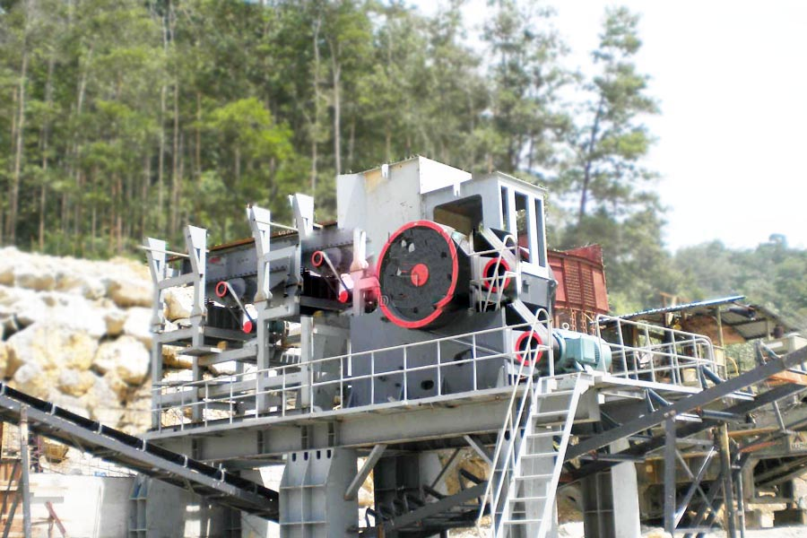

Construction waste crushing production line

Mobile construction waste crushing station for urban construction waste crushing.
basalt fiber manufacturing process
basalt fiber manufacturing process
Basalt is the ideal materials to mix asphalt mixture. basalt is largely applied to constructions of railway, highway, and airfield runway. To one complete basalt production line,it may contain many of the machines.The final equipments configuration depends the practical demands and the design.

Basalt processing equipment
This line includes Vibrating Feeder, Jaw Crusher, Impact Crusher, Vertical Shaft Impact Crusher, and so on. Basalt grinder can be divided into Raymond Mill, High Pressure Roller Mill, high pressure Powder Mill and so on. Together with Belt Conveyors, it makes up a complete unit of basalt aggregate processing line.
Basalt processing flow
The basalt stones of various sizes are fed into the jaw crushers for size reduction.
Depending on the desired output size of the crushed stone, the raw material may be fed to one or two jaw crushers in a sequence.
Then these crushed stones re passed on to the rotary screen for size gradation.
Material is handled through a belt conveyor to the different places of operation i.e from jaw crusher to the rotary screen.
Leave Me A Message, Now
If you have any questions regarding equipment prices, production line configuration or other problems, you can send a message to us, we will contact you soon.